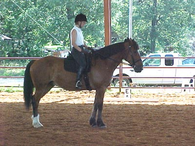
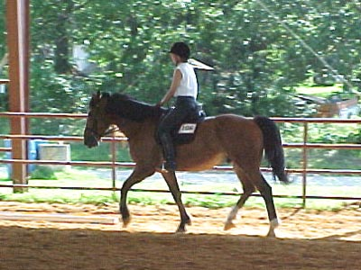
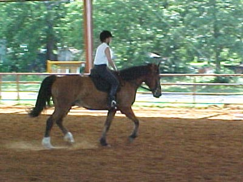
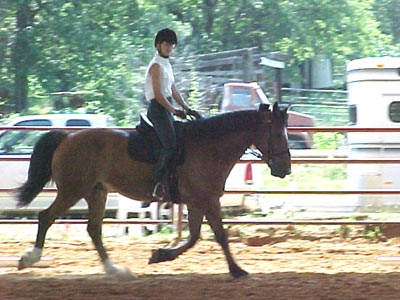
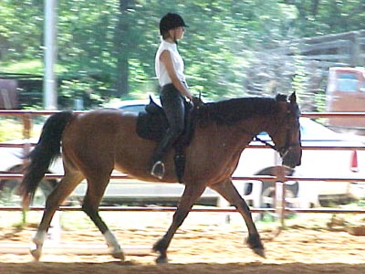
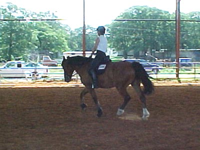
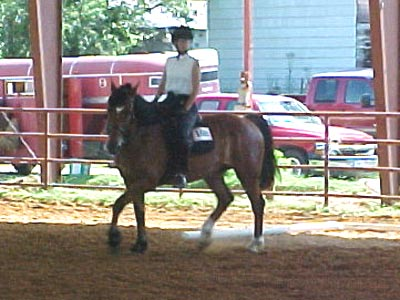

Dressage Show Bob was the star this time. We went Intro
1 & 2 and got
a 66% and a 67%. I walked him around before
the show started, and
the indoor arena was no problem. He was
responsive and forward.
I listened to the remarks from our first
test of 'consistent and obedient -now add
some more oomph to the process', and tried
to let him go more at the trot. We
got a 2nd in our second test...
Thuy was neighing and silly, but Bob listened
to me
and focused during the test (can't say
the same for Thuy...).

We weren't always straight on the
centerline, but his halts were nice.

I think this is the hollowest he got.
He's nice and steady with his head, even if he doesn't always soften.

I think this got the 8 on the test.
Letting him go forward seems to help him stay straight.

A little on the forehand, but not
heavy in my hands. He seems to have a nice sense of tempo.

It's nice to ride a horse that wants
to stretch into the bridle without leaning.

I like how he is under saddle. He
gives the appearance and feel of power.

Turning up centerline. Both tests
remarked that he had good balance turning up centerline (it was to the
left).